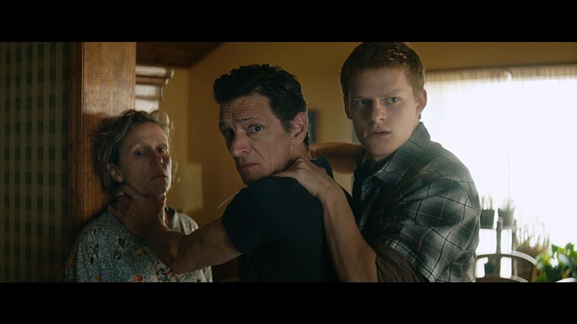
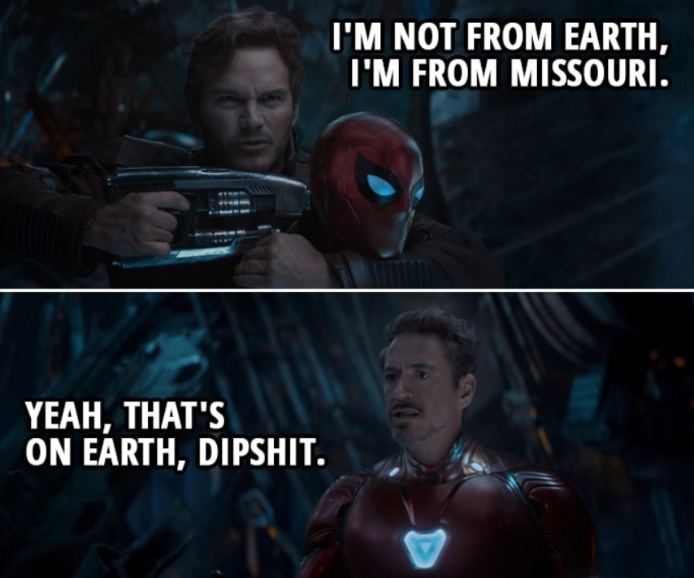
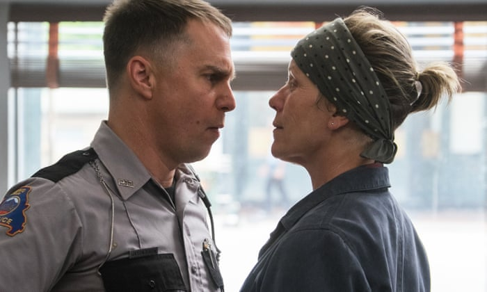
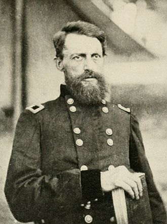
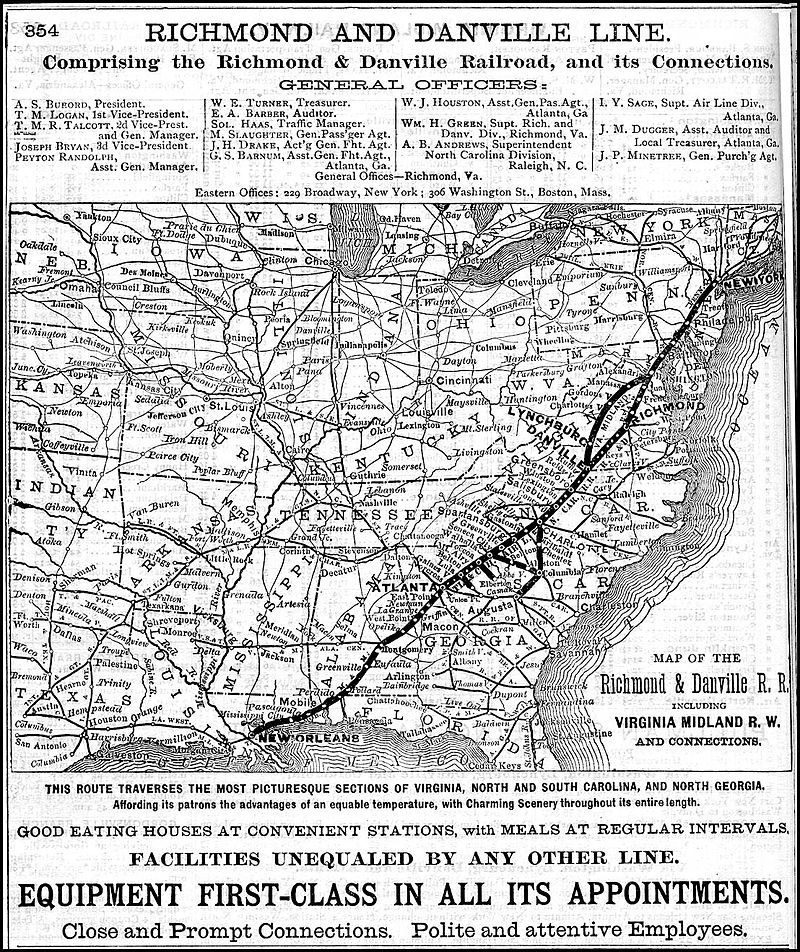
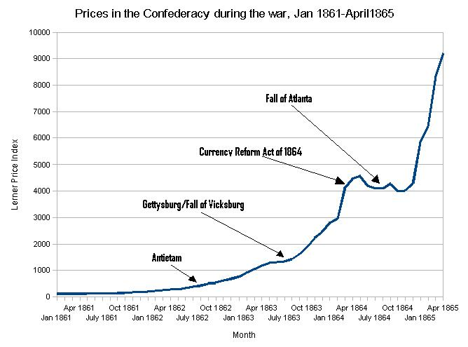
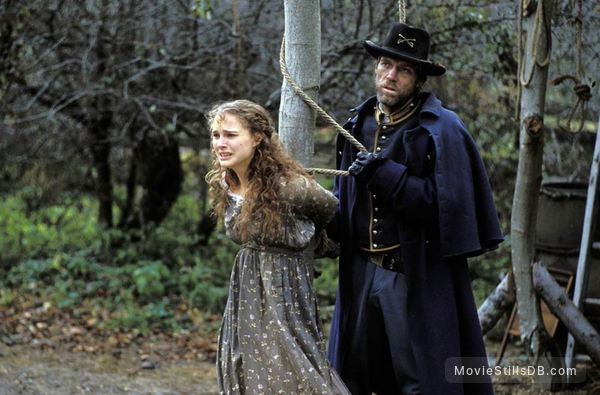

'쓰리 빌보드 아웃사이드 에빙, 미주리'에 나온 이 노래의 정체는 ? - The Night They Drove Old Dixie Down 가사
게시: 2020-05-14T06:30:05+09:00
최근에 'Three Billboards Outside Ebbing, Missouri'라는 영화를 봤습니다. 이 영화는 한줄 요약하면 '용서'에 대한 이야기입니다. 정말 재미있었습니다.

(이 장면은 이혼한 아빠가 엄마를 찾아와 이야기를 하다가 성질이 나니까 탁자를 엎어버리고 엄마를 두들겨 패려하는 상황에서 엄마를 보호하려는 아들이 아빠 목에 식칼을 들이대는 모습입니다. 우리나라에서는 '어떻게 감히 친부의 목에 칼을...' 하며 손사래를 칠 내용이겠습니다만, 가정 폭력에서 엄마를 지키려는 용감한 아들의 믿음직한 모습이라고 볼 수도 있습니다. 저기서 아들로 나오는 배우는 Lucas Hedges인데, 요즘 인상 깊게 본 영화에는 다 저 젊은 배우가 조연으로 나오더군요. Manchester by the Sea, Lady Bird, Ben is back 등등)
이 영화가 재미있었던 것은 이 영화가 미국 남부를 배경으로 하고 있는데 미국 남부는 원래 좀 괴상한 곳이라는 점이 한 몫 했습니다. 저는 직장 때문에 텍사스에 자주 가봤고 가끔씩은 몇 달씩 체류하기도 했는데, 확실히 텍사스를 포함한 남부에는 뭔가 좀... 그런 면이 좀 있습니다. (인종차별을 당했다는 이야기가 아닙니다. 적어도 저는 한번도 당한 적은 없었습니다.) 그 중에서도 텍사스는 유별나서 자동차 범퍼 스티커 등을 통해 자신이 텍사스 출신이라는 것을 뽐내고 다니는 사람들이 많습니다. 미국의 각 주는 나름대로 자부심이 있지만, 텍사스의 '텍부심'처럼 자기 고장에 대한 자랑이 유별난 곳은 그렇게 많지 않은 것 같아요. 미국 사람이냐고 물으면 '아니, 난 텍사스 출신인데' 라고 말하는 사람도 많다지요.
영화 '어벤저스 : 인피니티 워'에서도 토니 스타크가 피터 퀼에게 '너 지구 출신이냐 ?' 라고 물으니 '아닌데, 난 미주리 출신인데' (“I'm not from Earth I'm from Missouri")라고 말하는 장면이 나오는데, 이것도 그런 이상한 '남부심'과 맥락을 같이 하는 것 같습니다.

("난 지구 출신이 아니라 미주리 출신인데" "그래 그게 지구에 있다구, 이 멍청아.")
미국 남부가 저같은 외국인들에게 기괴하다고 느껴지는 부분은 특히 남북전쟁을 치르면서 북부놈들에게 졌다는 자격지심과 함께 그래도 자신들이 더 정당했다는 정신승리가 복합된 묘한 정서 때문에 더욱 그런 것 같습니다. 가령 전에 텍사스의 주도인 오스틴(Austin) 주청사를 방문했을 때 보니, 사방의 역사적 기념물과 관공서 건물 등에 남북전쟁 때 북군에 맞서 싸운 자랑스러운 남부 동맹군 관련 동상과 전쟁화 등을 잔뜩 치장해 놓았더군요. 그러나 그런 동상이나 기념비들은, 노예제에 대해서는 아무 말 없이 그냥 '우리는 헌법을 수호하기 위해 싸웠다'는 자기합리화 구호로 도배질이 되어 있습니다. 그러니까 미국 남부 애들은 나찌 독일의 과거에 대해 반성하는 독일로부터는 한 2만 광년 떨어져 있고 일본은 아시아의 해방을 위해 싸웠다는 일본 바로 옆동네 정도 되는 곳인 셈입니다.
이 'Three Billboards Outside Ebbing, Missouri' 라는 영화 속에서도 아직 50~60년대에 살고 있는 남부 미주리 사람들의 정서가 그대로 느껴집니다. 그리고 그런 동네에서도 '용서'의 미덕을 찾는 사람들 이야기가 영화의 줄거리라고 할 수 있습니다. 이걸 쓸데없는 눈물과 억지 감동이 아니라 비아냥과 냉소, 쿨함 속에서 보여주는 것이 이 영화의 매력이고요. 자세한 내용은 스포일러가 될 것이니 생략하겠습니다.

(꼴통 남부 레드넥의 전형이라고 할 수 있는 딕슨(Sam Rockwell 분)입니다. 이 사람과 주인공 밀드레드(Frances McDormand 분)와의 갈등과 용서가 이 영화의 줄기라고 할 수 있습니다. 샘 락웰은 이 영화로 아카데미 남우 조연상을, 프랜시스 맥도먼은 아카데미 여우 주연상을 받았습니다. 다음 번에 다루려고 하는 영화 '조조 래빗'에서도 샘 락웰은 정말 인상적인 연기를 보여줬습니다. 이 영화에서는 유색인종과 동성애자를 극혐하는 꼴통으로 나오는데 조조 래빗에서는...)
이 영화에서는 제 귀에 무척 반가운 음악이 삽입되어 더욱 즐거웠습니다. 전형적인 남부 레드넥인 딕슨 경관이 어느 술집에서 두들겨 맞는 장면에서 쥬크박스에서 흘러나오는 노래가 바로 존 바에즈(Joan Baez)의 'The Night They Drove Old Dixie Down' 입니다. 저는 처음 이 노래를 들었을 때는 그 멜로디와 후렴부를 듣고는 그냥 '미국 남부를 자동차로 여행하는 이야기인 모양이다'라고 생각했더랬습니다. 곡조는 경쾌한 컨트리 뮤직 같고 가사는 다소 해학적이라서 그냥 얼핏 들으면 분위기 띄울 때 좋은 신나는 노래 같거든요. 그러나 바에즈가 골라서 부른 노래 중에 그냥 신나는 곡이 있을 턱이 없지요.
이 노래 역시 바에즈 오리지널 곡이 아니라 원래 The Band라는 밴드의 리더인 Robbie Robertson이 작사작곡한 것입니다. 이 노래는 한줄 요약하면 미국 남북전쟁 당시 남부인의 시각에서 남부 동맹 최후의 순간을 묘사한 것입니다. 이 노래의 가사는 꽤 심오한 역사적, 군사적, 철학적인 면모를 두루 갖추고 있습니다.
먼저, 1절 가사에 나오는 65년이라는 것은 당연히 1865년을 뜻하는데, 이 해에 리치몬드가 함락되고 전쟁이 끝났습니다. 여기서 특히 주목할 부분이 'Til so much cavalry came and tore up the tracks again 이라는 부분입니다. 사실 이 부분은 바에즈가 이 노래를 취입할 때 제대로 된 악보와 가사집을 넘겨 받아서 한 것이 아니라 본인이 The Band의 오리지널 곡 레코드를 듣고 받아 적어서 부르는 바람에 '잘못' 받아적은 것입니다. (같은 영어권 사람들끼리도 딕테이션 100점 받기가 어려운가 봐요.) 원곡은 아래와 같이 'Til Stoneman's cavalry came and tore up the tracks again 입니다. 바에즈가 Stoneman이라는 단어를 잘못 듣고 So much라고 적은 것이지요.
Virgil Caine is the name
And I served on the Danville train
'Til Stoneman's cavalry came
And tore up the tracks again
In the winter of '65, we were hungry, just barely alive
By May the tenth, Richmond had fell
It's a time I remember, oh so well

(노래 가사 속에 나오는 영광을 얻은 조지 스톤맨입니다.)
원 가사에 나오는 '스톤맨의 기병대' 라는 것은 실제 역사적 사건으로서, 북군 기병대를 이끌고 남부에 몇차례 우회 침투하여 주요 수송 철도를 반복적으로 파괴한 북군 장교 조지 스톤맨(George Stoneman)을 말하는 것입니다. 실제로 노래 가사에 나오는 댄빌(Danville)에서 리치몬드(Richmond)에 이르는 철도는 남부군의 주요 수송로였습니다. 이 노래는 전쟁에 관한 노래이지만, 대전투 이야기는 없고 수송로 파괴와 그에 따른 패전 이야기를 하고 있지요. 그런 점에서 이 노래는 정말 전쟁의 본질에 대해 꿰뚫고 있다고 할 수 있습니다. 전쟁은 장군의 애국심과 병사들의 용기로 이기는 것이 아니라, 보급으로 이기는 것이거든요.

(이건 1882년의 지도이긴 합니다만, 리치몬드와 댄빌을 연결하는 철도의 지도입니다. 남북전쟁 당시 남부의 핵심 보급선이었습니다.)
그리고 2절에 나오는 로버트 E 리 장군을 만나는 장면도 인상적입니다. 주인공 버질의 와이프는 남부 사람들 모두가 존경하는 로버트 E 리 장군이 부하들과 함께 행군하는 것을 보고 남편보고 빨리 와서 보라고 하지만, 버질은 시큰둥합니다. 이미 패배하고 있던 당시 남부 동맹군은 무척 절박한 상황이라서 가는 곳곳마다 물자를 징발했기 때문입니다. 그 다음에 나오는 '돈이 쓸모가 없다'라는 부분은 그렇게 물건을 다 가져가고 그 물건값으로 두고 가는 돈이 사실상 부도수표처럼 아무 짝에도 쓸모가 없다는 것을 뜻합니다. 실제로 당시 북부나 남부나 지폐를 잔뜩 찍어서 전쟁 비용을 댔지만, 특히 그건 남부가 훨씬 심했습니다. 북부에서는 세금도 많이 올려서 비용을 충당했으나 남부는 세금보다는 지폐 발행에 더 많이 의존해서, 북부가 지페 공급량을 2배로 늘린 것에 비해 남부는 20배나 늘렸다고 합니다. 그러니 돈이 아무 쓸모가 없지요.

(남북전쟁의 진행에 따라 남부의 물가 상승률을 보여주는 그래프입니다. 돈을 그렇게 찍어대니 당연히 인플레가 생기는 것입니다.)
3절이 핵심이지요. 아무도 죽은 사람을 되살릴 수는 없습니다. 전쟁과 복수, 그런거 다 부질없는 짓이에요. 용감한 척, 심각한 척, 똑똑한 척 하는 사람들이 전쟁을 일으키지만, 정말 제 정신 박힌 사람이라면 전쟁 따위를 해서는 안됩니다. 미국 남북 전쟁에 대해서는 영화도 많고 소설도 많습니다만 많은 부분이 용기와 희생 자유 따위에 대해서 미화를 할 뿐입니다. 전쟁의 추악함에 대해 그린 남북전쟁 영화를 보시고 싶으신 분께는 주드 로와 니콜 키드먼 주연의 2003년 영화 '콜드 마운틴(Cold Mountain)'을 추천드립니다. 진짜 명작입니다.

('콜드 마운틴' 중 한 장면입니다. 전쟁과 무관하게 살고 싶은 민초를 짓밟는 것은 남부군 북부군을 가리지 않습니다. 이 영화는 캐스팅이 너무 화려해서, 나탈리 포트만이 저렇게 단역으로 나올 정도입니다.)
'The Night They Drove Old Dixie Down'의 가사는 로비 로버슨이 무려 8개월 간 도서관을 들락거리면서 공부한 끝에 지은 것입니다. 신기한 부분은 곡을 만든 로비 로버슨은 캐나다인으로서 미국 남부와는 아무 상관이 없는 사람이고, 심지어 백인과 모호크 인디언의 혼혈이라고 합니다. 다만 밴드 구성원 중 유일한 남부인인 드러머 Levon Helm이 이 곡을 만들 때 도움말을 주었고, 보컬도 남부 사투리가 익숙한 헬름이 맡아 불렀습니다. 그러나 이 오리지널 곡은 별 히트를 기록하지는 못했고, 존 바에즈가 부른 곡은 1971년에 빌보드 차트 3위에 까지 올라서 존 바에즈의 최대 히트곡 중 하나가 되었습니다. 그러나 정작 리본 헬름은 존 바에즈의 버전을 매우 싫어해서 존 바에즈에게 커버링을 허락해준 로버슨과 불화가 있었고, 결국 The Band는 이 곡을 이후로 전혀 연주하지 않았다고 합니다.
존 바에즈의 버전은 아래에서 감상하실 수 있습니다.

이건 존 바에즈의 라이브 공연입니다.

The Night They Drove Old Dixie Down
그들이 남부를 무너뜨리던 밤
Virgil Caine is my name and I drove on the Danville train
'Til so much cavalry came and tore up the tracks again
In the winter of '65, we were hungry, just barely alive
I took the train to Richmond that fell
It was a time I remember, oh, so well
내 이름은 버질 케인, 댄빌 열차를 몰았지.
그러다가 기병대가 몰려와서 철도를 또 엎어버렸어.
1865년 겨울, 우리는 거의 굶어죽을 지경이었지.
난 기차를 함락된 리치몬드로 몰고 갔어.
아, 그 시절에 대한 기억이 너무 또렷해.
The night they drove old Dixie down
And all the bells were ringin'
The night they drove old Dixie down
And all the people were singin'
They went, "Na, na, na, na, na, na
Na, na, na, na, na, na, na, na, na"
그들이 남부를 무너뜨리던 밤
온 동네 모든 종이 일제히 울렸지
그들이 남부를 무너뜨리던 밤
사람들이 모두 노래를 불렀지
이렇게 말이야 "나나나나 나나나나"
Back with my wife in Tennessee
And one day she said to me
"Virgil, quick! Come see
There goes Robert E. Lee"
Now I don't mind, I'm chopping wood
And I don't care if the money's no good
Just take what you need and leave the rest
But they should never have taken the very best
테네시 우리집에 와이프와 함께 있던 어느날
와이프가 부르더군
"버질, 빨리와서 봐 !
저기 로버트 E. 리 장군이 가쟎아."
난 관심없어 난 장작이나 팰래
그들이 던져주는 돈이 휴지조각이래도 상관없어
그냥 필요한 건 가져가고 나머지는 냅두라고
하지만 가장 소중한 건 가져가지 말았어야지
The night they drove old Dixie down
And all the bells were ringin'
The night they drove old Dixie down
And all the people were singin'
They went, "Na, na, na, na, na, na
Na, na, na, na, na, na, na, na, na"
그들이 남부를 무너뜨리던 밤
온 동네 모든 종이 일제히 울렸지
그들이 남부를 무너뜨리던 밤
사람들이 모두 노래를 불렀지
이렇게 말이야 "나나나나 나나나나"
Like my father before me, I'm a working man
And like my brother before me, I took a rebel stand
Well, he was just eighteen, proud and brave
But a yankee laid him in his grave
I swear by the blood below my feet
You can't raise a Caine back up when he's in defeat
내 앞의 아버지처럼 난 노동자야
내 앞의 형처럼 난 반란군 편에 섰지
형은 고작 18살이었지만 건방지고 용감했지
하지만 양키놈이 저승으로 보내버리더군
내 발 밑에 고인 피를 두고 맹세하건데
쓰러진 케인 가문 사람을 도로 살려낼 수는 없어
The night they drove old Dixie down
And all the bells were ringin'
The night they drove old Dixie down
And all the people were singin'
They went, "Na, na, na, na, na, na
Na, na, na, na, na, na, na, na, na"
그들이 남부를 무너뜨리던 밤
온 동네 모든 종이 일제히 울렸지
그들이 남부를 무너뜨리던 밤
사람들이 모두 노래를 불렀지
이렇게 말이야 "나나나나 나나나나"
Source : https://en.wikipedia.org/wiki/Richmond_in_the_American_Civil_War
https://en.wikipedia.org/wiki/American_Civil_War
https://en.wikipedia.org/wiki/Richmond_and_Danville_Railroad
https://en.wikipedia.org/wiki/The_Night_They_Drove_Old_Dixie_Down
https://en.wikipedia.org/wiki/George_Stoneman